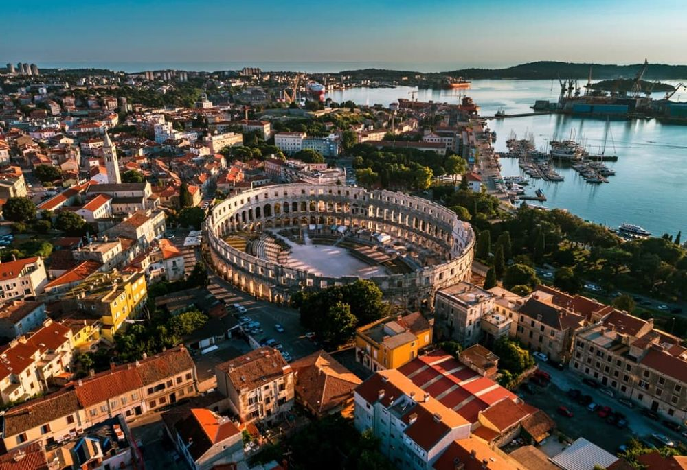

Descoperă orașul Pula - O călătorie în Croația
Pula este un oraș istoric și cultural din Croația, oferind o varietate de atracții interesante pentru vizitatori:
-

Amfiteatrul din Pula - Martor al istoriei
Explorați faimosul amfiteatru roman, o bijuterie arhitecturală și martor al evenimentelor istorice.
-

Centrul vechi al orașului Pula - Patrimoniu istoric
Plimbați-vă prin străzile înguste ale centrului vechi și descoperiți clădiri istorice și piețe pitorești.
-

Templul lui Augustus din Pula - Arhitectură romană
Aflați mai multe despre istoria și arhitectura romană vizitând acest templu bine conservat.
-

Portul din Pula - Priveliști maritime
Bucurați-vă de priveliștile asupra mării Adriatice și a portului animat al orașului.
-

Plajele din Pula - Relaxare pe plajă
Relaxați-vă pe plajele frumoase din apropierea orașului.
Concluzii
Pula oferă o călătorie în timp prin istorie și cultură, împreună cu frumusețea naturală a regiunii.